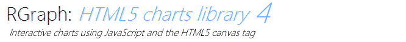

Demos of charts (local)
Demos of some of the various charts and features provided by RGraph
Go to the demos (local) »
Demos of charts (online)
The same demos as above are also available on rgraph.net. Due to browser security the AJAX demos will not work locally
so you can see these if you go online.
Go to the demos (online) »
Other pages on rgraph.net
-
Home page
The RGraph homepage on www.rgraph.net
-
Examples
Examples of the types of charts that are supported by RGraph.
-
Documentation
Documentation for RGraph
-
HOWTO guides
Guides for doing specific tasks with RGraph.
© Copyright 2014 RGraph Licensing All rights reserved.